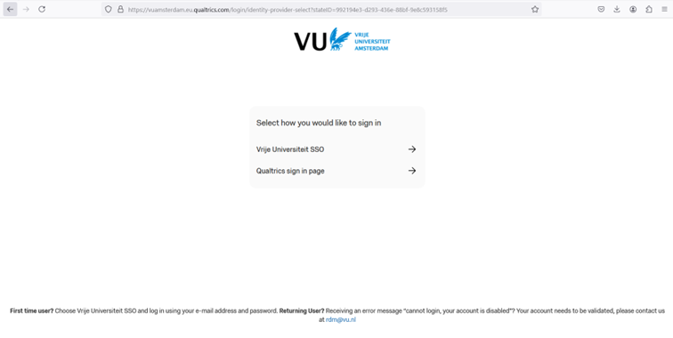
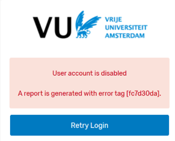

Qualtrics
Qualtrics is a cloud-based subscription and software platform (SaaS) that enables users to create and manage online surveys. The Qualtrics survey tool can support a variety of (complex) survey design requirements by providing such functionalities as different question types, display and branching logic configuration and the use of embedded data and API’s.
VU Amsterdam holds an academic license which includes non-standard, advanced features and functions, including but not limited to:
- FILE UPLOAD – a non-standard question type that allows respondents to upload a file along with their survey response
- SIGNATURE QUESTION – a non-standard question type that presents survey participants with an entry box where they can draw their signature.
- API INTEGRATION – an advanced license feature that can be used to automate repetitive processes inside of Qualtrics or to pass information in and out of Qualtrics.
- OFFLINE SURVEY APP – an advanced license feature that comprises a downloadable application available for iOS and Android that allows you to administer surveys on your mobile device or tablet without an internet connection.
License Limitation
Whilst all VU students, employees and researchers are eligible to make use of a Qualtrics license, VU’s Qualtrics license usage is limited for creating, managing and collecting data for scientific research purposes only.
Qualtrics should not be used for non-scientific purposes such as the creation of registration or attendance lists, and course evaluation surveys for example; instead users should go to other available tools such as MS Forms.
Creating and Accessing User Accounts
VU Amsterdam Qualtrics Central Brand (hereafter VU’s Central Brand) at [vuamsterdam.eu.qualtrics.com] allows for user’s auto-enrolment, an automated account creation, and registration process. Any user with an enabled VU email address may auto-enroll on VU’s Central Brand. The email address will function as the account’s username.
VU’s Central Brand makes use of Single-Sign On (SSO). This means that users can log in to Qualtrics using VU’s internal login system. Multi-Factor Authentication (MFA) is mandatory to all Qualtrics users utilizing the vuamsterdam brand. MFA acts as an additional layer of security to prevent unauthorized users from accessing accounts and resources, even when the password has been stolen. Qualtrics will use multi-factor authentication to validate user identity and provide quick and convenient access to authorized users.
To create a user account and access the Qualtrics environment at the Central Brand, please proceed as follows:
- Go to: https://vuamsterdam.eu.qualtrics.com
- On the login page, choose: Vrije Universiteit SSO
- Log in with your VU account credentials (email address and password)

It is recommended to save VU’s Central Brand as a Favourite or Bookmark link for future reference.
Note to Existing Users
Security Settings: Login Error Disabled Account
Security settings are in place that disable a user account after a certain amount of inactivity. This threshold is currently 12 months. This setting follows security requirements regarding User Account Management.

A disabled account status does not affect its data.
Users who receive an error when trying to log back in after extended periods of inactivity ([User account is disabled]) should contact the RDM Support Desk to have their accounts re-enabled.
Getting Started
The following resources are available for you to get started with Qualtrics:
Qualtrics Basecamp
basecamp.qualtrics.com, the online learning platform where you have access to learning instructions on how to use Qualtrics.
Qualtrics Knowledge Base
Qualtrics offers access to an extensive library of knowledge base articles, including detailed instructions on how to use and configure (advance) features.
Qualtrics Knowledge Base library can be accessed directly at qualtrics.com/support
Qualtrics Community
Ask questions to the Qualtrics community (platform of all Qualtrics users).
When logging in choose “Sign in with SSO”, when asked “Enter your company’s Organization ID” fill in vuamsterdam.